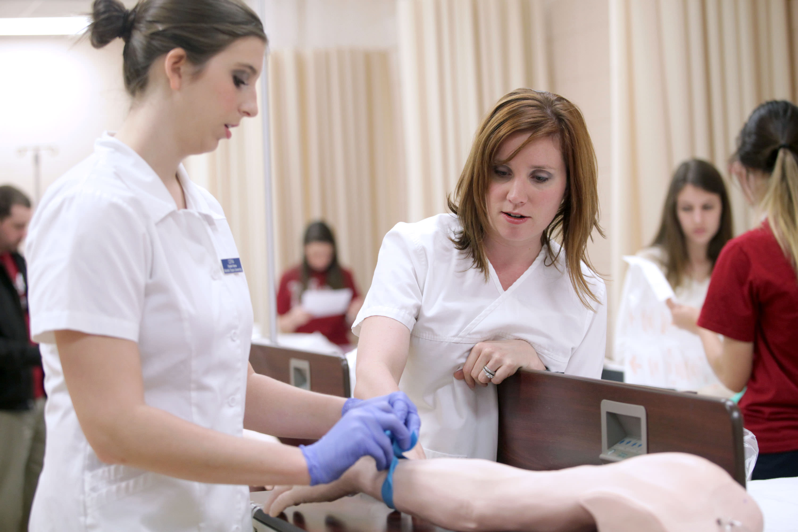
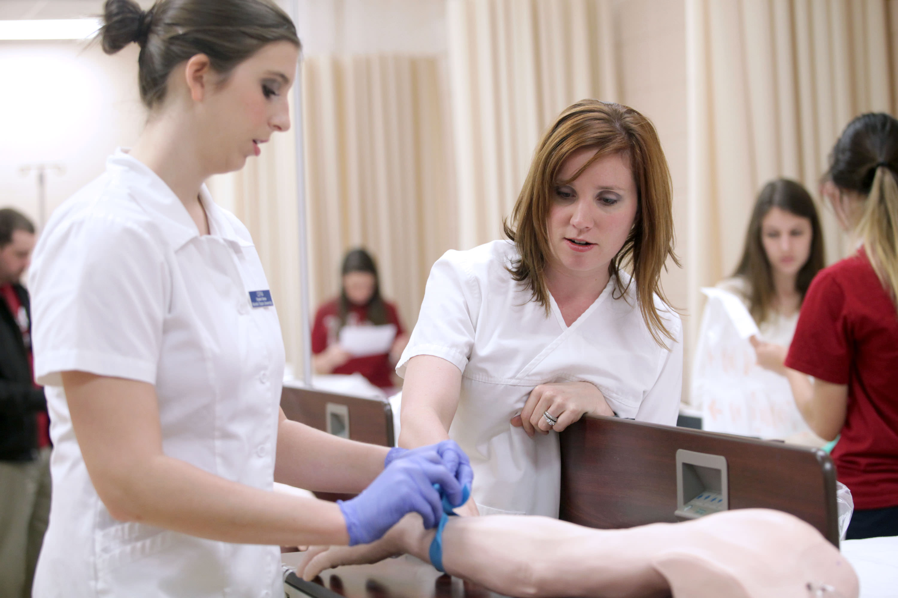

Lizeth Estrada
I am a reliable, service-focused nursing professional with excellent patient-care and charting skills gained through five years of experience as a CNA. I am also compassionate and technically skilled in attending to patients in diverse healthcare settings.There are many good things that come out of being a Certified Nursing Assistant and you get to experience many new things. When you work with elderly people you get to know them very well and it’s almost like you have 20 sets of grandparents. The residents that you work with usually start to really trust you and look at you as if you were part of there family. Sometimes the CNA’s also become the resident’s best friends.
For many people who don’t like working outdoors, a Certified Nursing Assistant job might be just right. As a CNA, you don’t do many things outdoors except maybe go outside for a few minutes with the residents. Therefore, you wont have to deal with being outdoors much if that’s not something that you want to do everyday. Most people that I have talked to that have experience as a CNA, say that the best part of there job, by far, is knowing at the end of the day that you have made a difference in someone’s life.In conclusion to my research I have found that there are a lot of many different tasks that a Certified Nursing Assistant must complete on his/her day to day basis.
CNAs are very strong emotionally, physically, and mentally and they are some of the people that I look up to because they make a huge difference in people who need assistants every day life. People who need help in there everyday life need someone who they can count on to help them out, luckily they have Certified Nursing Assistants that they can count on and consider them there friends. They also have very good job security if this is a profession that you might enjoy. The daily life and duties of a CNA is very interesting to me and they make a huge difference in people’s lives.
Experience
Secretary
• Helped organized club events
• Maintained all important files
• Helped keep club records
Nursing Assistant
• Provide high-quality patient care as an in-demand per-diem CNA within surgical, acute-care, rehabilitation, home-healthcare and nursing-home settings.
• Preserve patient dignity and minimize discomfort while carrying out duties such as bedpan changes, diapering, emptying drainage bags and bathing.
• Cared for the patient's needs
• Helped maintain a clean enviornment
Education
UC Riverside
University of California Riverside
University of California Riverside
Portfolio


